Dokumentasi Presentasi Client
Link Akses: accurix.luvion.my.id Demo Login:
budi@tokosejahtera.com/password123
Accurix Luvion adalah aplikasi akuntansi & pembukuan berbasis web untuk UMKM, mengacu standar PSAK EMKM. Mencakup pencatatan kas & bank, piutang/invoice, stok & HPP, jurnal umum double-entry, hingga laporan keuangan dan kewajiban pajak — dalam satu platform terintegrasi.
Dibangun dengan teknologi modern untuk keandalan dan skala: - Frontend: Next.js 15 + React 19 + TypeScript + Tailwind CSS - Backend: Laravel (PHP) + MySQL — REST API dengan autentikasi Sanctum - Akuntansi: Double-entry engine, jurnal otomatis & validation balance (debit = kredit) - Keamanan: Token-based auth, data per-perusahaan (multi-tenant)
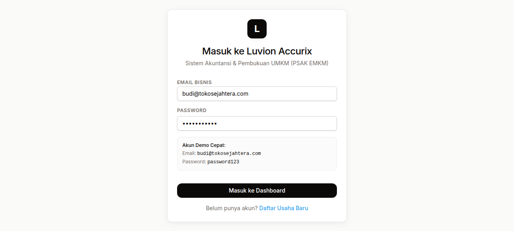
Pintu masuk aman dengan autentikasi berbasis email & token (Sanctum). Terdapat akun demo cepat untuk mencoba aplikasi; registrasi usaha baru juga tersedia langsung dari halaman login.
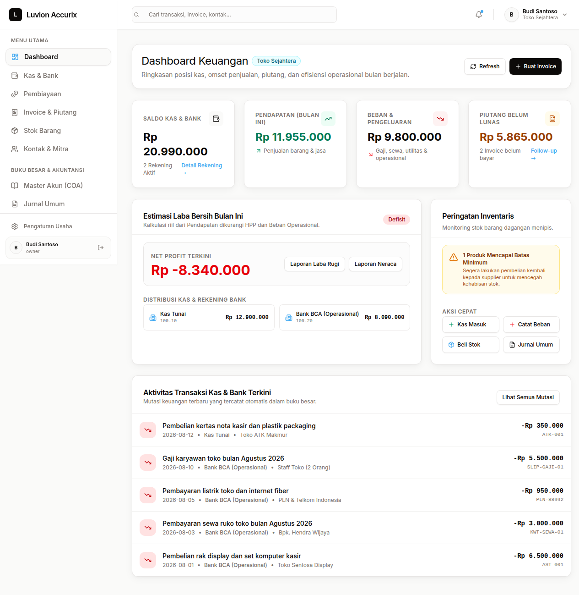
Pusat kendali kondisi finansial waktu nyata: saldo kas & bank, pendapatan bulan berjalan, beban operasional, piutang belum lunas, estimasi laba bersih, distribusi kas per rekening, peringatan stok menipis, serta aksi cepat (catat kas masuk, beban, beli stok, jurnal).
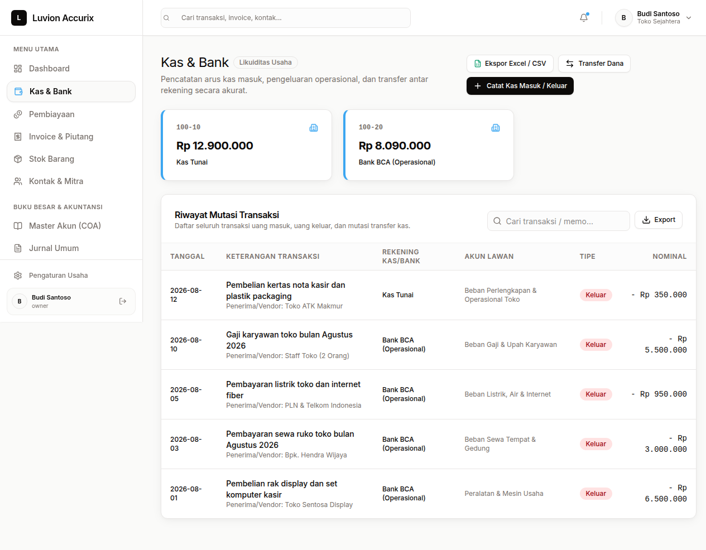
Pencatatan arus kas masuk, pengeluaran operasional, dan transfer antar rekening: - Multi akun kas/bank (Kas Tunai, rekening bank operasional) - Riwayat mutasi transaksi lengkap + pencarian - Ekspor Excel / CSV & kaitannya otomatis ke jurnal umum
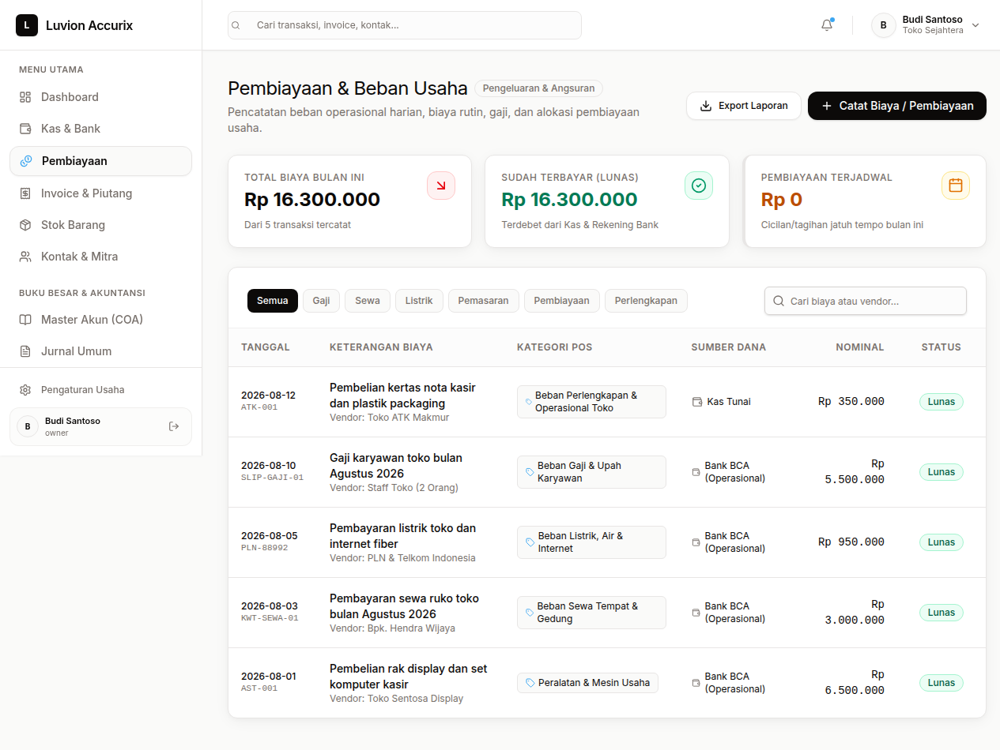
Pencatatan beban operasional harian (gaji, sewa, listrik, ATK, pemasaran, pembiayaan terjadwal) dengan filter kategori, rekapitulasi biaya bulanan, dan laporan ekspor.
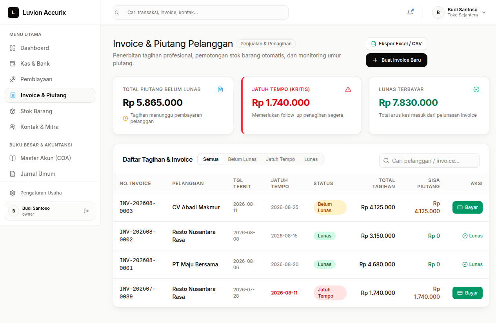
Penerbitan tagihan profesional, pemotongan stok otomatis, dan monitoring umur piutang: - Total piutang belum lunas & tagihan jatuh tempo kritis - Pencatatan pembayaran (lunas / sebagian) langsung dari daftar - Filter status: Semua, Belum Lunas, Jatuh Tempo, Lunas - Jurnal piutang & HPP dibuat otomatis saat invoice terbit
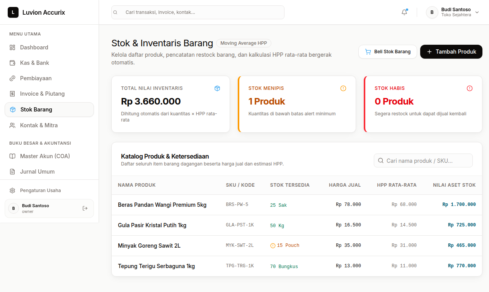
Manajemen inventaris dengan metode Moving Average HPP: - Total nilai inventaris otomatis (kuantitas × HPP rata-rata) - Peringatan stok menipis & stok habis (min-stock alert) - Beli stok (restock) & tambah produk; setiap pembelian tercatat ke jurnal persediaan - Pengurangan stok otomatis saat invoice diterbitkan
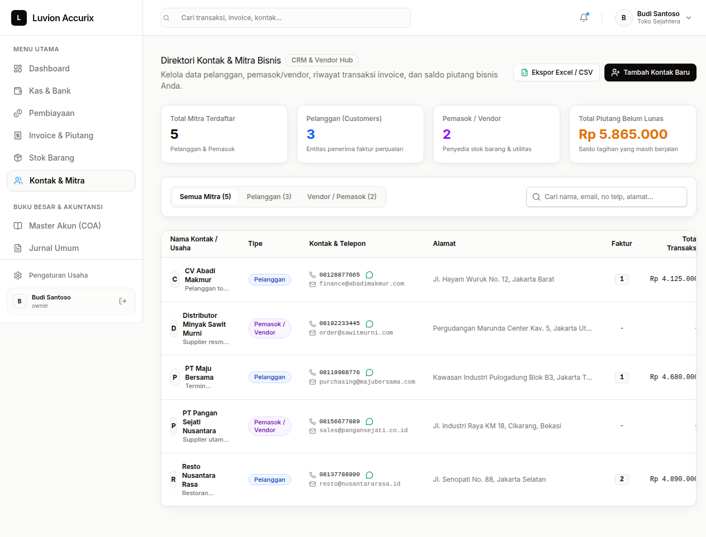
Direktori pelanggan & pemasok dengan statistik mitra, saldo piutang per kontak, riwayat transaksi invoice, dan integrasi WhatsApp untuk follow-up penagihan.
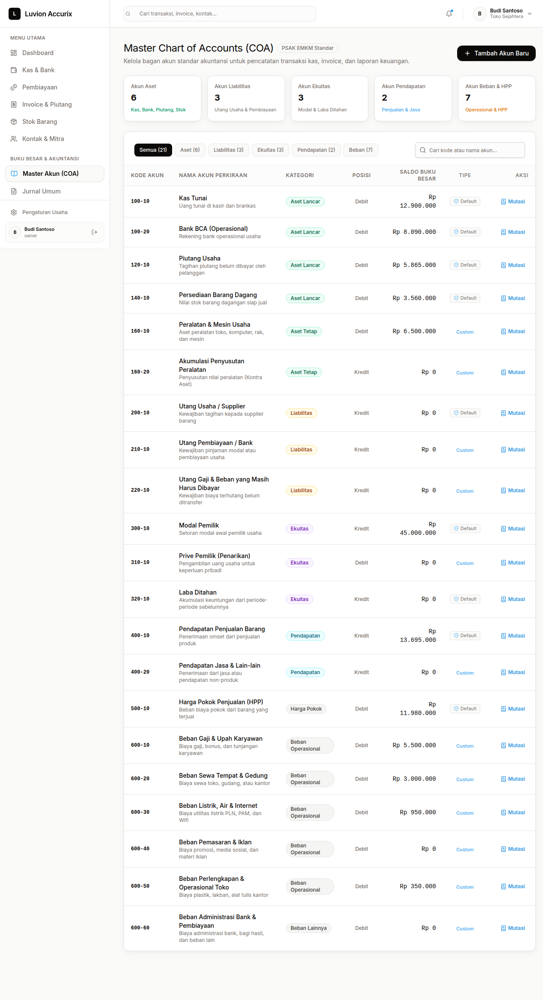
Bagan akun standar PSAK EMKM (Aset, Liabilitas, Ekuitas, Pendapatan, Beban & HPP) — lengkap dengan saldo buku besar per akun, posisi debit/kredit, dan mutasi.
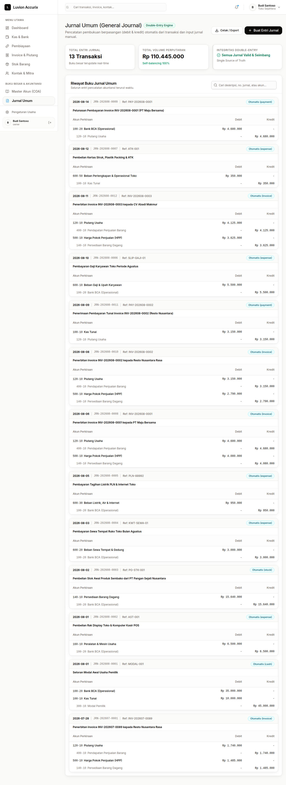
Pencatatan pembukuan berpasangan: - Mesin double-entry: validasi otomatis debit = kredit, self-balancing 100% - Entri jurnal manual & jurnal otomatis dari tiap modul (kas, invoice, stok, beban) - Riwayat jurnal terurut waktu dengan rincian akun per baris
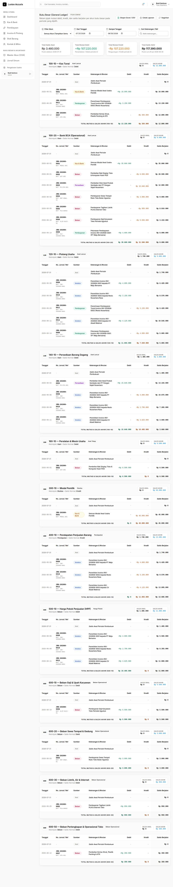
Rekam jejak mutasi debit, kredit, dan saldo berjalan per akun per periode — filter akun, rentang tanggal, dan pencarian keterangan. Saldo awal/akhir dihitung otomatis.
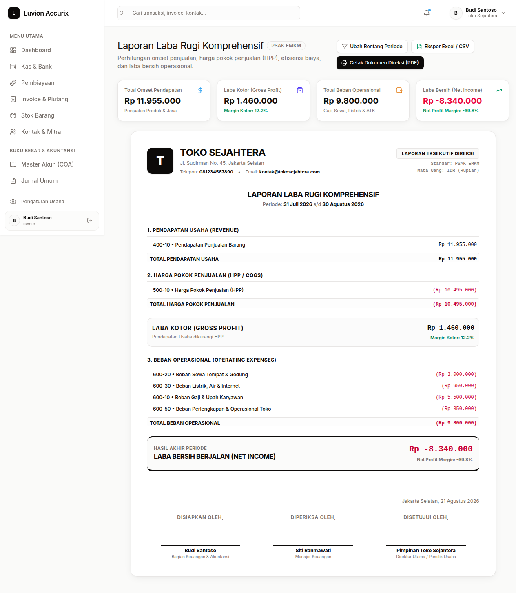
Pendapatan, HPP, beban operasional, laba kotor, dan laba bersih (margin otomatis) — format PSAK EMKM siap cetak untuk direksi.
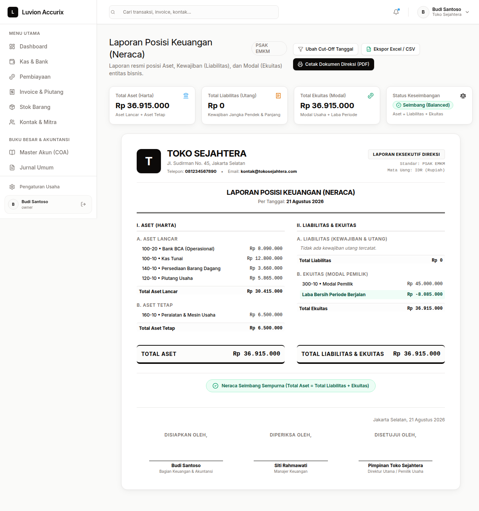
Aset lancar, aset tetap, liabilitas & ekuitas dengan indikator Seimbang (Balanced). Otomatis menjaga persamaan akuntansi (Aset = Liabilitas + Ekuitas).
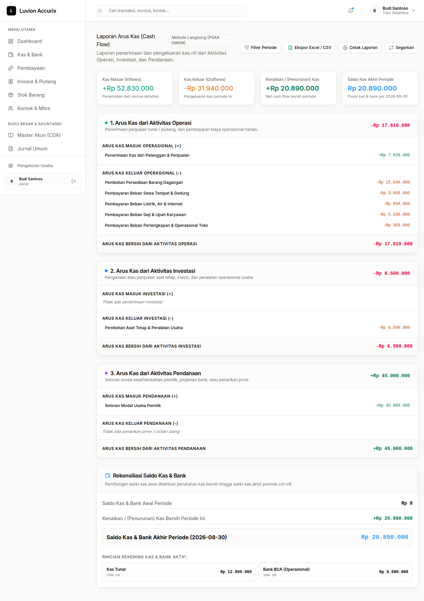
Arus kas dari aktivitas operasi, investasi, dan pendanaan (metode langsung) + rekonsiliasi saldo kas & bank akhir periode.
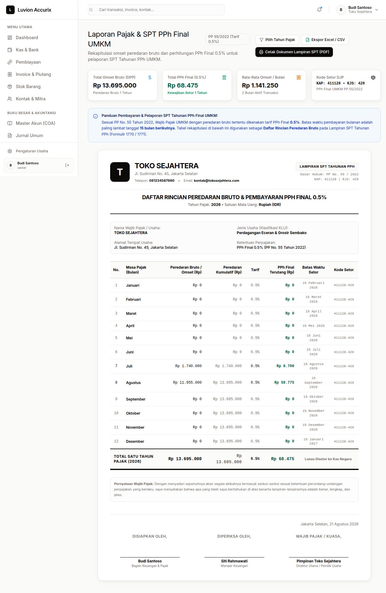
Rekapitulasi omset & kalkulasi PPh Final UMKM 0,5% (PP No. 55/2022): - Tabel peredaran bruto per bulan + kumulatif tahunan - Perhitungan PPh terutang & batas waktu setor (tgl 15 bulan berikutnya) - Kode setor DJP (KAP 411128 / KJS 420) - Cetak dokumen lampiran SPT Tahunan (1770/1771)
| Modul | Fitur Utama |
|---|---|
| Dashboard | Saldo kas, pendapatan, beban, piutang, estimasi laba, peringatan stok, aksi cepat |
| Kas & Bank | Mutasi kas, transfer antar rekening, beban harian, ekspor Excel |
| Invoice & Piutang | Terbit invoice, potong stok otomatis, bayar/lunas, aging piutang, follow-up WA |
| Stok & HPP | Moving Average HPP, restock, min-stock alert, nilai inventaris otomatis |
| Kontak & Mitra | Pelanggan & vendor, piutang per kontak, riwayat transaksi, WhatsApp |
| COA & Jurnal | Bagan akun PSAK EMKM, jurnal double-entry, validasi balance, edit/hapus jurnal manual |
| Buku Besar | Mutasi debit/kredit per akun, saldo berjalan, filter periode & akun |
| Laporan | Laba rugi, neraca (balanced), arus kas — format direksi, ekspor Excel & PDF |
| Pajak | PPh Final 0,5% PP 55/2022, rekap omset bulanan, lampiran SPT 1770/1771 |
| Keamanan | Token auth (Sanctum), multi-tenant per perusahaan, integritas double-entry |
| Peran | Password | |
|---|---|---|
| Owner / Pemilik | budi@tokosejahtera.com |
password123 |
| Staff / Karyawan | siti@tokosejahtera.com |
password123 |
Database telah diisi data dummy yang realistis untuk presentasi — Toko Sejahtera, toko sembako yang sudah berjalan:
| Modul | Jumlah | Detail |
|---|---|---|
| Perusahaan | 1 | Toko Sejahtera (PSAK EMKM, Jakarta Selatan) |
| Pengguna | 2 | Owner & Staff |
| Bagan Akun (COA) | 21 | Aset, liabilitas, ekuitas, pendapatan, beban & HPP |
| Kas & Bank | 2 | Kas Tunai Rp 12,9 jt + Bank BCA Rp 8,09 jt |
| Kontak | 5 | 3 pelanggan (PT Maju Bersama, CV Abadi Makmur, Resto) + 2 vendor |
| Produk | 4 | Beras, minyak goreng, gula, tepung — 338 unit awal |
| Invoice | 4 | 2 lunas, 1 belum lunas, 1 jatuh tempo |
| Transaksi Kas | 5 | Modal, peralatan, sewa, listrik, gaji, ATK |
| Jurnal | 13 | Otomatis dari tiap modul + manual, semuanya balance |
| Pergerakan Stok | 9 | 4 pembelian + 5 penjualan (stok sinkron dgn jurnal) |
Contoh alur lengkap: Setoran modal Rp 45 jt → beli peralatan & stok awal Rp 15,64 jt → invoice penjualan 4 pelanggan (13,695 jt) → pelunasan 2 invoice (7,83 jt) → beban operasional (9,8 jt). Neraca tetap seimbang: Aset = 36.915.000 = Liabilitas + Ekuitas.
| Komponen | Teknologi |
|---|---|
| Frontend | Next.js 15, React 19, TypeScript, Tailwind CSS |
| Backend | Laravel 10, REST API, Sanctum Auth |
| Basis Data | MySQL |
| Standar Akuntansi | PSAK EMKM (UMKM) |
| Metode Persediaan | Moving Average HPP |
| Double-Entry | Validasi balance debit = kredit, jurnal otomatis multi-modul |
| Pajak | PPh Final UMKM 0,5% (PP 55/2022), lampiran SPT |
| Export | Excel / CSV & Cetak PDF dokumen direksi |
Dokumentasi disusun untuk kebutuhan presentasi client. Semua screenshot diambil secara live dari aplikasi berjalan di accurix.luvion.my.id.